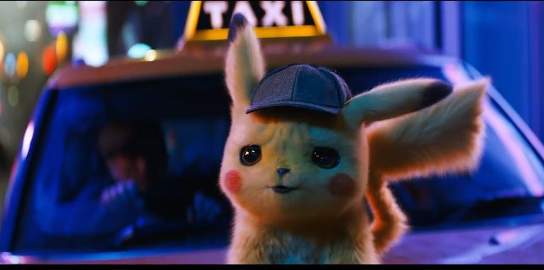
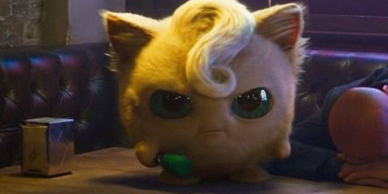
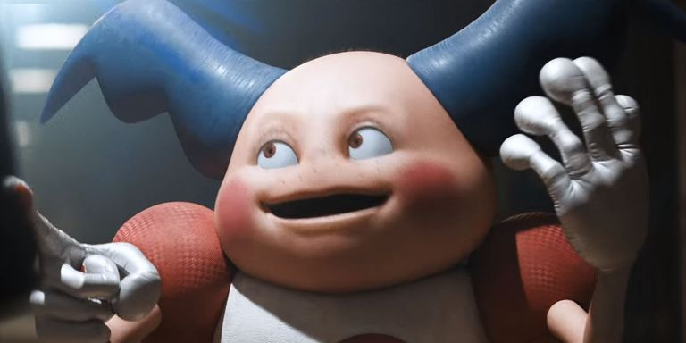
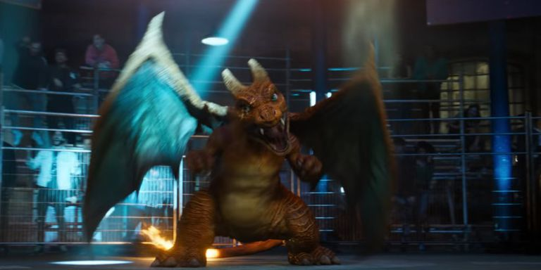

'Detective Pikachu' es la apuesta que más está llamando la atención entre sus seguidores. La película, que se estrenará en cines el próximo 10 de mayo de 2019, no ha dejado indiferente a nadie, especialmente a los fans de la franquicia. Pero ¿qué sabemos exactamente sobre la película?
La sinopsis oficial de la película es la siguiente:
“Tim Goodman llega a Ryme City para investigar la misteriosa desaparición de su padre en la ciudad. En el camino, se encuentra con un Pikachu que habla, aunque él es el único que puede entenderlo. Ambos trabajarán juntos para resolver este gran enigma junto a la reportera Kathryn Newton y su Psyduck”
Por lo que hemos podido ver en el primer tráiler (Podrás verlo al final de esta sección), Ryme
City es una ciudad futurista, famosa por establecer una gran armonía entre humanos y pokémon.
Tim Goodman, el protagonista de la historia, viaja allí en busca de su padre desaparecido, quien fue una leyenda en la ciudad.
Todo cambia cuando conoce a Pikachu y descubre que es el único que puede entenderle.
Consciente de su capacidad como investigador, unen fuerzas para resolver el misterio que les llevará en una aventura por toda la región.
También sabemos que Tim está frustrado porque, de joven, quería ser entrenador pokémon y, como él mismo dice, "no salió muy bien". En su habitación tiene un póster sobre un campeonato llevado a cabo en Sinnoh, región de la cuarta generación de 'Pokémon'. Por lo tanto, la historia se desarrolla en el mundo canónico de la franquicia.
La película es una producción conjunta de Legendary Entertainment, The Pokémon
Company y Warner Bros. Pictures. La distribución ha quedado a cargo de Warner
Bros en todo el mundo a excepción de Japón, donde la productora Toho (famosa
por películas de Godzilla y otros monstruos similares) se encarga de su
comercialización.
El director escogido para el filme ha sido Rob Letterman, famoso por la
adaptación al cine de 'Pesadillas' en 2015, la película animada 'Monstruos
contra Alienígenas' y 'Los viajes de Gulliver'. El guion ha sido escrito por
Nicole Perlman ('Guardianes de la Galaxia', 'First Man') y el propio Letterman.
La producción corre a cargo de Mary Parent y Cale Boyter, y la banda sonora ha
sido compuesta por Henry Jackman ('Kick-Ass', 'Kingsman: Servicio Secreto',
'Capitán América: Civil War').
La figura más llamativa del reparto es Ryan Reynolds, protagonista de
'Deadpool' que ha dado voz a Pikachu en la versión inglesa, así como el
protagonista del largometraje, Justice Smith ('Jurassic World: El reino caído').
En el filme saldrán cientos de ellos, pero algunos de ellos tendrán más importancia que otros. De momento, los más importantes que hemos visto son los siguientes:
Es el protagonista del filme y, por lo tanto, tendrá un peso evidente
en la película. Es probable que veamos otros Pikachu a lo largo del metraje.

Es el compañero de Lucy Stevens, la periodista que acompañará a Tim Goodman
a lo largo de la película. Por lo que parece, seguirá siendo tan bobalicón
como en el anime original.
Puede que no sea muy relevante dentro de 'Detective Pikachu', pero las redes
se han vuelto locas con el Jigglypuff que aparece cantando en un karaoke,
tan enfadado como siempre y con su característico mechón incluido.

El más espeluznante de todos los pokémon aparecidos en el tráiler es Mr.
Mime, a quien los protagonistas interrogarán en busca del padre de Tim.

Probablemente en momento climático del largometraje, Pikachu se enfrentará
a un todopoderoso Charizard. Que dios le pille confesado.

Se especula que un MewTwo podría ser el villano de la película, pero hay que dejar los spoilers aparte, nunca se sabe.
Tal es la confianza de Warner en 'Detective Pikachu' que el estudio ya ha puesto en marcha una secuela de la historia oficial, aunque todavía no se sabe demasiado sobre esta historia.
Por otra parte, otras fuentes cercanas a Warner han asegurado que se está llevando a cabo una película de 'Rojo y Azul', los primeros videojuegos de la saga. De ser así, veríamos a los personajes con los que tantas veces hemos jugado en una historia preciosamente nostálgica.
Se oye genial, ¿Verdad?
Como detalles finales, desde los primeros segundos del tráiler, todo está enfocado hacia la sátira. Sátira hacia todo lo que ha significado Pokémon en sus más de veinte años de historia, y sátira hacia una historia que, por bien que la hagan, no está hecha para tomársela en serio. Letterman ha tenido el valor de coger la franquicia más inadaptable de la historia y convertirla en una película cómica dirigida a quienes crecimos Pokémon.
Muchos fans creen que es el mayor despropósito que se ha hecho nunca en Pokémon, incluso creen que con ello se pierde el espíritu de la saga. No obstante, con este filme la marca se quita el cartel que la cataloga como "infantil" e "inmadura". 'Detective Pikachu' es el 'Deadpool' de los videojuegos, y abre un camino que puede seguir explorándose de cientos de formas posibles.
Como opinión personal, me llama la atención lo que este metraje trata de ofrecer, es algo fuera de lo común y merece ser visto. ¿Te animas?
¡Echa un vistazo!: Sitio oficial de Detective Pikachu